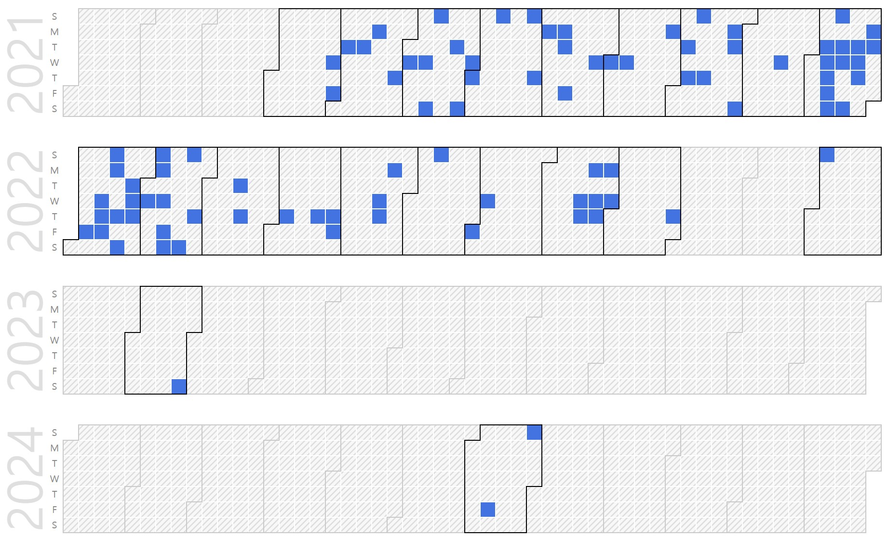

Joonghyun An (Senior Engineer in SK Hynix)
Ph.D. Prospective Candidate, Senior Engineer in SK Hynix. |
Repository Commit History
|  |
Introduction
Full Bio Sketch
 Mr. An received the M.S. degree in School of Electronics Engineering from Kyungpook National University, Daegu, Korea, in 2017. His research interests include ultra-low power VLSI chip design for IoT-driven applications and implementing machine learning. He has a lot of experience in the design of SoC(System on Chip) for embedded systems such as MCUs, and has published several journal/conference papers related robust processor architecture protecting abnormal clock failure. Currently, He is developing ARM-based NAND flash controllers with Custom-Designed VLSI circuits at SK Hynix Semiconductor and is researching the theory of DSP(Digital Signal Processing) for artificial intelligence development for self-improvement.
Mr. An received the M.S. degree in School of Electronics Engineering from Kyungpook National University, Daegu, Korea, in 2017. His research interests include ultra-low power VLSI chip design for IoT-driven applications and implementing machine learning. He has a lot of experience in the design of SoC(System on Chip) for embedded systems such as MCUs, and has published several journal/conference papers related robust processor architecture protecting abnormal clock failure. Currently, He is developing ARM-based NAND flash controllers with Custom-Designed VLSI circuits at SK Hynix Semiconductor and is researching the theory of DSP(Digital Signal Processing) for artificial intelligence development for self-improvement.
Research Topic
 Portable systems with built-in active noise control is required low power operation. Excessive anti noise search operation can lead to rapid battery consumption. A method that can adaptively cancel noise according to the operating conditions of the system is required and the methords of reducing power are becoming very important key feature in today’s portable systems. In this paper, we propose the method of active noise control(ANC) using binary search algorithm in noisy systems. The implemented architecture detects a frequency component considered as noise from the input signal and by using the binary search algorithm, the system find out an appropriate amplitude value for anti-noise in a much faster time than the general linear search algorithm. Through the experimental results, it was confirmed that the proposed algorithm performs a successful functional operation.
Portable systems with built-in active noise control is required low power operation. Excessive anti noise search operation can lead to rapid battery consumption. A method that can adaptively cancel noise according to the operating conditions of the system is required and the methords of reducing power are becoming very important key feature in today’s portable systems. In this paper, we propose the method of active noise control(ANC) using binary search algorithm in noisy systems. The implemented architecture detects a frequency component considered as noise from the input signal and by using the binary search algorithm, the system find out an appropriate amplitude value for anti-noise in a much faster time than the general linear search algorithm. Through the experimental results, it was confirmed that the proposed algorithm performs a successful functional operation.
Publications
Verilog HDL Practical Guide
This book covers example-based tutorial of hardware programming using Verilog HDL.
|
Journal Publications
Joonghyun, Jiae Youn, Jeonghun Cho, and Daejin Park. Automatic On-Chip Glitch-Free Backup Clock Changing Method for MCU Clock Failure Protection in Unsafe I/O Pin Noisy Environment (KCI) Journal of the Institute of Electronics and Information Engineers, 52(12):99-108, Dec 2015.
Jiae Youn, Joonghyun An, Meng Di Yin, and Daejin Park. Safe Adaptive Headlight Controller with Symmetric Angle Sensor Compensator using Steering-Swivel Angle Lookup Table (KCI) Transactions of the Korean Society of Automotive Engineers, 24(1):112-121, Jan 2016.
Joonghyun An, Moon Gi Seok, and Daejin Park. Automatic On-Chip Backup Clock Changer for Protecting Abnormal MCU Operations in Unsafe Clock Frequency (SCI) IEICE Electronics Express, 13(24):20160808-20160808, 2016.
Joonghyun An and Daejin Park. Fast Adaptation Techniques of Compensation Coefficient of Active Noise Canceller using Binary Search Algorithm (KCI) Journal of the Korea Institute of Information and Communication Engineering, 2021.
Joonghyun An and Daejin Park. Adaptive Active Noise Canceller with Binary Search-based Coefficient Compensation Accelerator for Low-Power Lightweighted Microcontrollers (SCI) (On Writing) Electronics, 2021.
Conference Publications
Junghyun An and Daejin Park. On-Chip Glitch-Free Backup Clock Changer using Noise Canceller and Edge Detector for Automatic MCU Clock Failure Protection In 2015 ISET, pages 1-3, April 2015.
J. An, J. Cho, and D. Park. On-Chip Glitch-Free Backup Clock Changer with Noise Canceller and Edge Detector for Safety MCU Clock System In 2015 IEEE 4th Global Conference on Consumer Electronics (GCCE), pages 487-488, Oct 2015.
Junghyun An and Daejin Park. Safe Microcontroller with On-Chip Bus Transition Monitor and Glitch-Free Backup Clock Changer for Clock-Failure Protection In 2016 IEEE COOLChips, pages 1-3, April 2016.
S. S. Kim, J. An, J. Cho, and D. Park. Acoustic Event Detection-Based Individualized Things-Human Interaction Using Matlab-Microcontroller Interoperation In 2016 IEEE 5th Global Conference on Consumer Electronics, pages 1-2, Oct 2016.
Joonghyun An and Daejin Park. Runtime Compensation Coefficient Estimation Techniques using Binary Search Algorithm for Low-Power Active Noise Cancelling Systems In 2021 IEEE ICCE-Asia, 2021.
Participation in International Conference
ISET 2015, Daegu, Korea (Distinguished Paper)
IEEE GCCE 20215, Osaka, Japan
IEEE COOLChips 2016, Kyoto, Japan
IEEE ICCE-Asia 2021, Korea
Projects
Embedded Flash+EEPROM Combi General Micocontroller with Common Function
Embedded Flash+EEPROM Combi Micocontroller with ROM Encryption
HDMI-CEC Compliant Microcontroller Design
Low Power 3D Glasses Sync Processor for 3D TV
Dedicated Microcontroller for LED BLU control
Microcontroller with Driver & DC-DC One chip Solution
Flash Control device with UFS 2.0 host protocol
Flash Control device with eMMC 5.1 host protocol
Flash Control device with UFS 3.0/2.1 Combi host protocol
NAND PHY IP design for high speed NAND Flash access